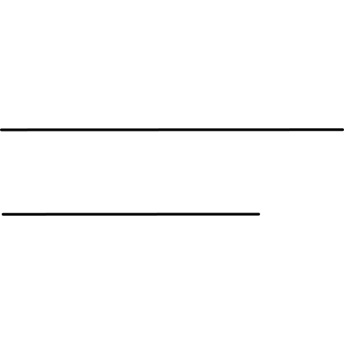
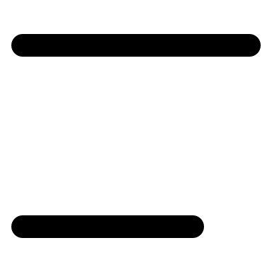
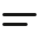

20 revisions · gpt-6 · model valid · full gate pass · zero warnings
1. solo/wind-symbol

Original

Rejected

Fixed lightFixed dark
The rejected two wind strokes were separated almost the full canvas height. Bring the two unequal horizontal lines back together to match the simple reference.
The rejected winged lion had a blocky single wing, a plain rounded head and squared limbs. Restore a swept wing, a scalloped mane and a rounded muzzle with stepping feet.
Fine mane scallops, eye and distant legs omitted; wing, tail, muzzle and stepping feet retained.
The rejected pirate had a flat brim and a featureless mouth area. Restore a bowed hat brim and a wider round jaw around the wink; retain the broad straw crown.
Tiny smile and ears omitted to keep the eye and wink separated within the face.
The rejected earbuds used circular or split-ring heads. Restore opposed bulbous earpieces, full stems and a rounded charging case. Omit the tiny lightning bolt to preserve the case opening.
Tiny lightning bolt and earbud speaker marks omitted to preserve open stems and case interior.
The rejected earbuds used circular or split-ring heads. Restore opposed bulbous earpieces, full stems and a rounded charging case. Omit the tiny lightning bolt to preserve the case opening.
Tiny lightning bolt and earbud speaker marks omitted to preserve open stems and case interior.
The rejected blank-faced woman lost her parted hair and collar shape. Restore a parted fringe below a distinct bun, a circular jaw and broad shoulders touching the jaw.
Fine collar and ears omitted; blank face, bun, swept fringe and shoulders retained.
The rejected bun portrait had a triangular peak and a tiny shieldlike face. Restore a rounded bun, fuller circular jaw and swept fringe above broad shoulders.
Tiny eyes, smile and collar omitted; rounded bun, swept hair and shoulders retained.
The rejected side-parted woman had helmet-like hair and a tiny face. Restore fuller circular cheeks, extended hair and an asymmetric swept fringe over broad curved shoulders.
Fine neck and blouse outline omitted; circular cheeks, swept part, side hair and broad shoulders retained.
The rejected masked woman had a hanging central bar. Restore long side hair around a complete round face with a horizontal mask edge and curved lower mask.
Swept fringe and flared hair ends simplified; long side hair, round face and separate mask edge retained.
The rejected worker used a T-shaped torso and rectangular conveyor divisions. Restore rounded shoulders, a separate outlined package and a slim rounded conveyor beneath them.
Roller circles and box tape omitted to keep the narrow conveyor opening clear; curved shoulders and package retained.
The rejected bob-haired portrait used a helmet-like arc and generic shoulders. Restore turned-out bob ends and a closed rounded blouse under the circular jaw.
Fine neck omitted; swept fringe, turned-out bob ends and closed rounded blouse retained.